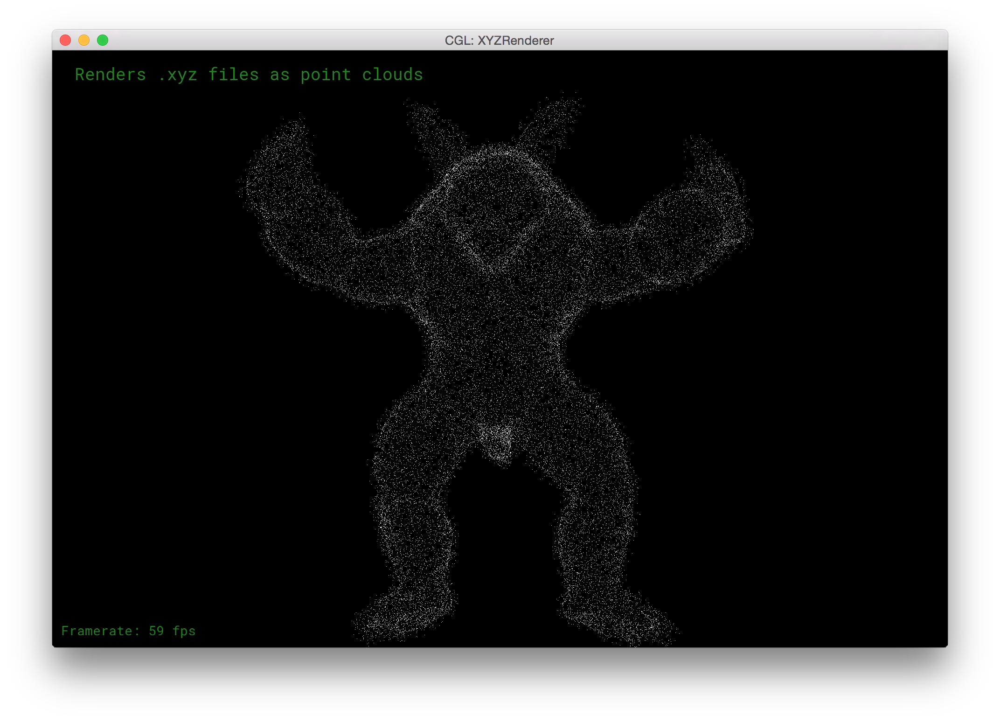
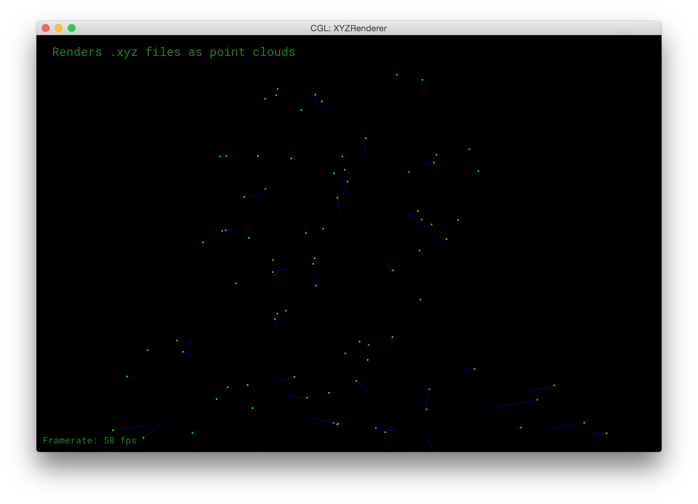
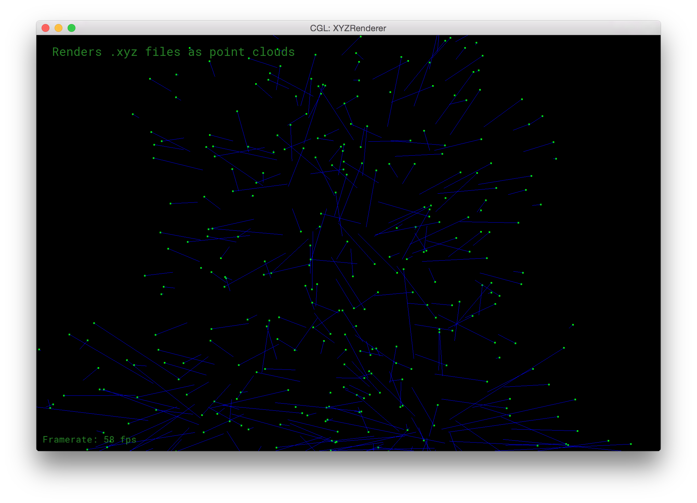
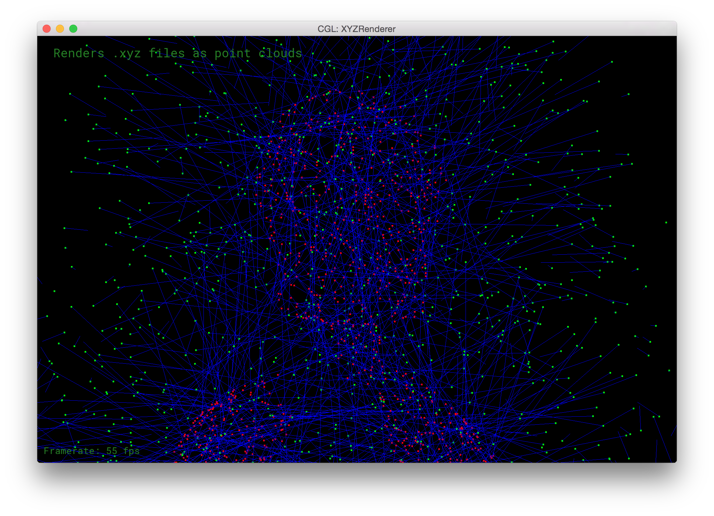

Point Cloud to Mesh
Project pipeline
For this project, we start with a .ply file containing vertices and triangular face indices. This makes it easy to render the meshes provided using MeshEdit. However, all of the .ply files are missing vertex normal data and face normal data. This data is necessary for the ball-pivoting algorithm (BPA), so we had to figure out a way to extract vertex normals from a set of vertices and faces. Our approach was simple, construct the mesh with the provided faces, and use the MeshEdit code we used to compute vertex-based normals (for lighting) and instead use it for creating .txt files that contained the vertex-normal pairs we needed for BPA.
State
Description
.ply
positions face_indices
The .ply file is deserialized into a set of positions and face_indices.
positions face_indices
positions normals
We use MeshEdit to convert face indices into face normals, and then interpolate around a vertex to find vertex normals.
positions normals
.txt
We serialize the positions and normals to a .txt file in order to access them later. This means we don't have to rely on MeshEdit inside of our BPA code because we already have computed the normals.
.txt
positions normals
We deserialize the .txt file into a set of positions and normals
positions normals
positions face_indices
This is where the BPA algorithm goes. It is the hardest part of the process, and it gives us back the face data.
positions face_indices
.ply
Here, we serialize our positions and face_indices into a .ply, and we've basically come full circle. This makes it easy to compare our input .ply and our output .ply.
Visually debugging vertex normals
We couldn't think of a way to test our code for creating vertex normals without viewing the normals, and our current rendering code would just display the point cloud like this:
We decided to add some code to display the normals, but no matter what depth we viewed them at, it was difficult to tell whether or not they were oriented correctly.


Finally, we had the idea of adjusting a few parameters to make visual vertex normal debugging possible.
- Extend the length of the normal vector
- Decrease the far-clip of the camera
- Make the vertices red
- Make the normal vectors blue
- Make the end of the normal vectors green
Then, if we zoom in on the mesh, we should see green before we see red, which would tell us that the normals are indeed facing outwards.
  
Using this method, we were able to verify our code for calculating vertex normals and produce the .txt data we needed, which has this format:
vx1 vy1 vz1 nx1 ny1 nz1 vx2 vy2 vz2 nx2 ny2 nz2 . . . . . . . . . . . . . . . . . . vxm vym vzm nxm nym nzm
Here is an example:
5.89458 11.7884 27.2832 -0.83141 -0.404449 0.381023 -53.3251 67.1044 -57.4501 -0.878005 -0.293709 0.377946 3.75049 16.5054 29.454 -0.736516 -0.579169 0.349439 -40.0742 -33.2375 10.7422 -0.859218 -0.0742719 0.50619 -52.8133 67.0694 -57.5725 -0.844274 -0.203288 0.495858 -52.4255 66.8347 -57.3804 -0.820147 -0.109775 0.561524
Data Structure: VoxelArray
The Ball-Pivoting Algorithm is run on a .txt file, which contains an unordered set of positions and normals for each respective point in the point cloud. In order for the BPA algorithm to work, we need a method to access all of the points within a given radius of any local point. At most for the BPA, we need to obtain all points within $2\rho$ distance from the local point. To allow these queries for neighboring points, we created the VoxelArray data structure.
The VoxelArray is a 3D grid of cubic voxels, each voxel having side lengths of $2\rho$. With this voxel side length, we can successfully obtain all of the neighboring points: all points within $2\rho$ of the local point is contained within the local (center) voxel and it's 26 neighboring voxels. (Which constitutes a $3$x$3$x$3$ voxels, $6\rho$ length cube.) The points contained within the 27 local voxels can then be quickly filtered and sorted based on their distances from the local point.
The VoxelArray structure has both advantages and disadvantages.
Advantages
- Fast voxel access: The voxels are all indexed in the
VoxelArrayfor constant time access. Each voxel is a vector container of contained points. - Intuitive internal structure: Voxels' indices are a flattened value based upon the integer x-, y-, and z-coordinates of the voxel. Float coordinates can simply be truncated into integers for indexing. Neighboring voxels can be found by $\pm 1$ to the integer x-, y-, and z-coordinates.
Disadvantages
- Memory intensive: The entire space of the point cloud is contained within the
VoxelArraycube, whose voxels are all indexed and reserved. The amount of memory reserved is directly proportional to the size of the mesh, and inversely prportional to the input radius $\rho$. - Empty voxels: Voxels are still allocated space on the memory even when no points are contained within its volume.
Data Structures: Vertex, Edge, Facet
Our BPA implementation uses a mixture of Vertexs, Edges, and Facets in order to represent the reconstructed mesh. We do not explicitly need any "mesh" structure which encompasses Vertex, Edge, Facet, because of the nature of the .ply format. .ply files only need to store point positions and faces, which are triangles indexing the points, to represent a mesh. So our final output only requires that we keep track of a list of Vertexs, which contain point positions, and a list of Facets, which contain sets of 3 Vertexs.
Vertex
A Vertex contains a 3D vector containing a point's position and the point's normal. These two pieces of data are gathered from the input .txt file. All of the points are stored in the "Point Cloud." The Cloud is simply a std::vector of Vertexs. This also happens to be the list of points used in the final output.
A Vertex also has a flag indicating whether the it is an inner vertex, which signifies that it has already been included within the reconstructed parts of the mesh -- whether it has already been processed.
Edge
A Facet contains a 3D vector
Facet
A Vertex contains a 3D vector